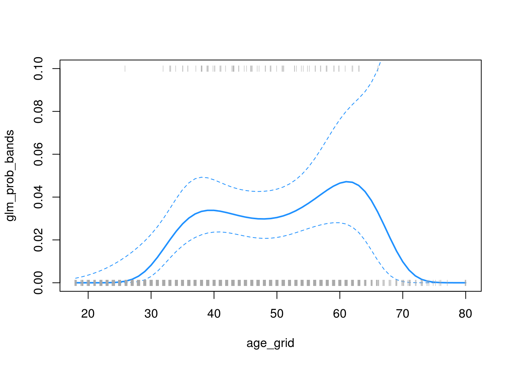
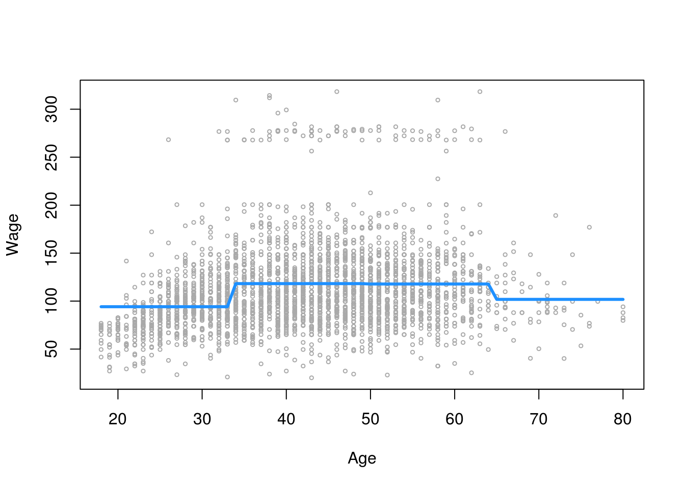
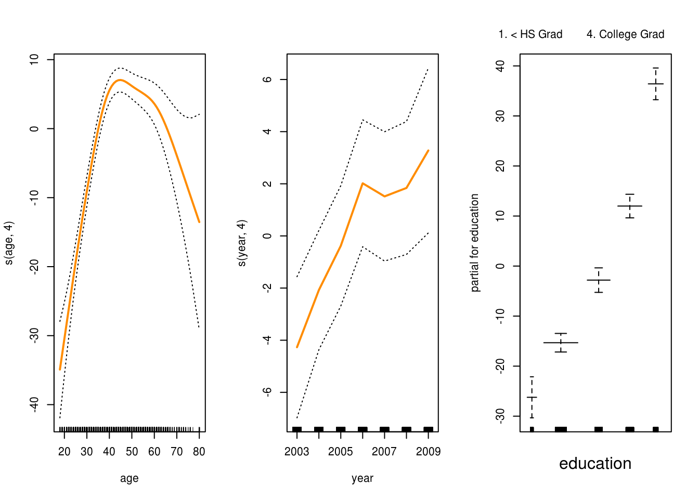
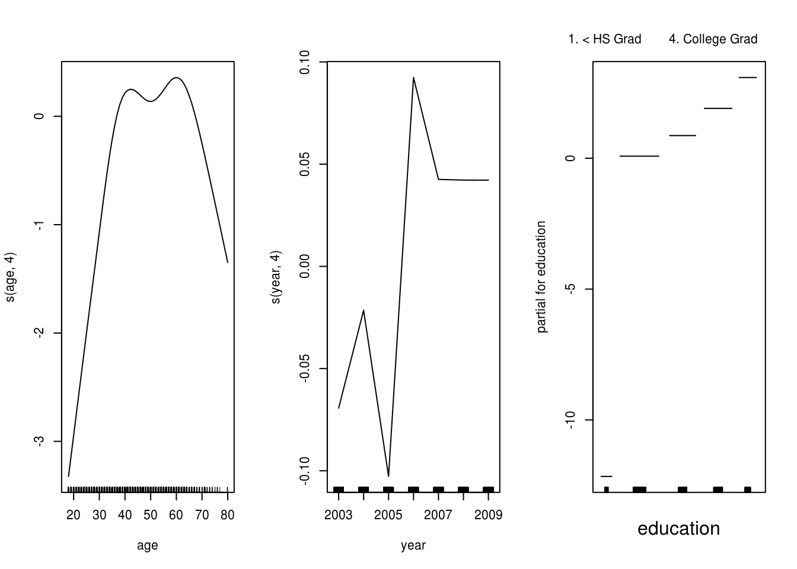
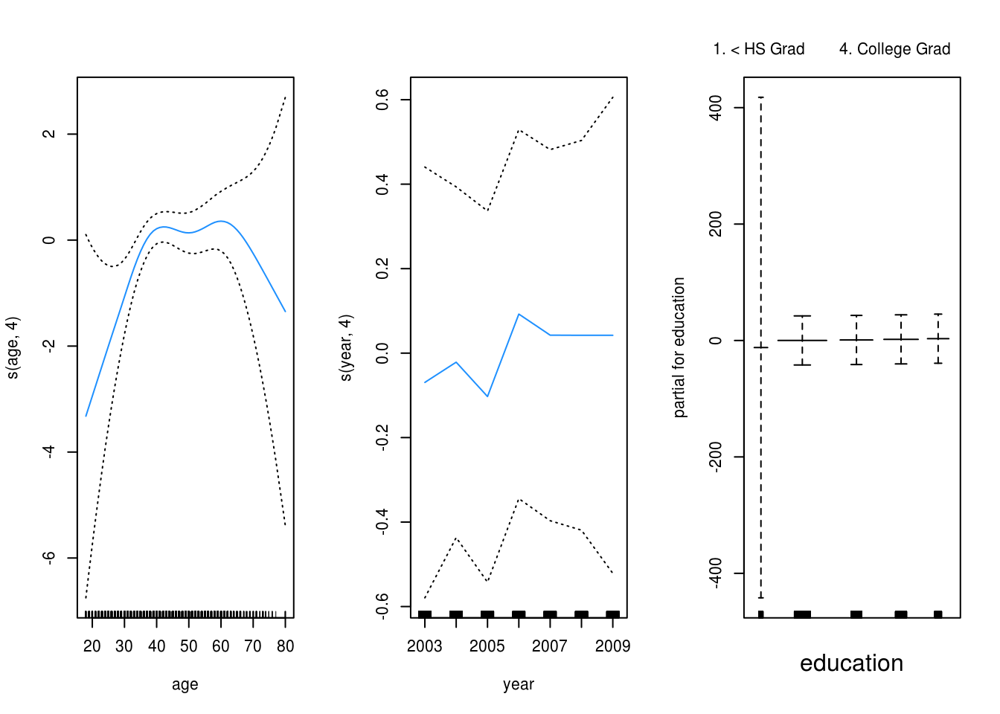

Chapter 17 Non-Linear Models
Some notes:
- Currently, most of this code is similar to that of the non-linear chapter of ISLR. It will likely change in the future.
- GAMs and
carethave some issues working together! - These are currently notes without narrative.
library(ISLR)17.1 Polynomial Regression
fit_poly_4 = lm(wage ~ poly(age, 4), data = Wage)
summary(fit_poly_4)##
## Call:
## lm(formula = wage ~ poly(age, 4), data = Wage)
##
## Residuals:
## Min 1Q Median 3Q Max
## -98.707 -24.626 -4.993 15.217 203.693
##
## Coefficients:
## Estimate Std. Error t value Pr(>|t|)
## (Intercept) 111.7036 0.7287 153.283 < 2e-16 ***
## poly(age, 4)1 447.0679 39.9148 11.201 < 2e-16 ***
## poly(age, 4)2 -478.3158 39.9148 -11.983 < 2e-16 ***
## poly(age, 4)3 125.5217 39.9148 3.145 0.00168 **
## poly(age, 4)4 -77.9112 39.9148 -1.952 0.05104 .
## ---
## Signif. codes: 0 '***' 0.001 '**' 0.01 '*' 0.05 '.' 0.1 ' ' 1
##
## Residual standard error: 39.91 on 2995 degrees of freedom
## Multiple R-squared: 0.08626, Adjusted R-squared: 0.08504
## F-statistic: 70.69 on 4 and 2995 DF, p-value: < 2.2e-16fit_poly_4_raw = lm(wage ~ poly(age, 4, raw = TRUE), data = Wage)
summary(fit_poly_4_raw)##
## Call:
## lm(formula = wage ~ poly(age, 4, raw = TRUE), data = Wage)
##
## Residuals:
## Min 1Q Median 3Q Max
## -98.707 -24.626 -4.993 15.217 203.693
##
## Coefficients:
## Estimate Std. Error t value Pr(>|t|)
## (Intercept) -1.842e+02 6.004e+01 -3.067 0.002180 **
## poly(age, 4, raw = TRUE)1 2.125e+01 5.887e+00 3.609 0.000312 ***
## poly(age, 4, raw = TRUE)2 -5.639e-01 2.061e-01 -2.736 0.006261 **
## poly(age, 4, raw = TRUE)3 6.811e-03 3.066e-03 2.221 0.026398 *
## poly(age, 4, raw = TRUE)4 -3.204e-05 1.641e-05 -1.952 0.051039 .
## ---
## Signif. codes: 0 '***' 0.001 '**' 0.01 '*' 0.05 '.' 0.1 ' ' 1
##
## Residual standard error: 39.91 on 2995 degrees of freedom
## Multiple R-squared: 0.08626, Adjusted R-squared: 0.08504
## F-statistic: 70.69 on 4 and 2995 DF, p-value: < 2.2e-16coef(fit_poly_4)## (Intercept) poly(age, 4)1 poly(age, 4)2 poly(age, 4)3 poly(age, 4)4
## 111.70361 447.06785 -478.31581 125.52169 -77.91118coef(fit_poly_4_raw)## (Intercept) poly(age, 4, raw = TRUE)1
## -1.841542e+02 2.124552e+01
## poly(age, 4, raw = TRUE)2 poly(age, 4, raw = TRUE)3
## -5.638593e-01 6.810688e-03
## poly(age, 4, raw = TRUE)4
## -3.203830e-05plot(fitted(fit_poly_4), fitted(fit_poly_4_raw))
age_lower = range(Wage$age)[1]
age_upper = range(Wage$age)[2]
age_grid = seq(from = age_lower, to = age_upper, by = 1)
age_pred = predict(fit_poly_4, newdata = data.frame(age = age_grid), se = TRUE)
age_se_bands = cbind(age_pred$fit + 2 * age_pred$se.fit, age_pred$fit - 2 * age_pred$se.fit)
plot(wage ~ age, data = Wage,
cex = .5, col = "darkgrey",
xlab = "Age", ylab = "Wage"
)
lines(age_grid, age_pred$fit, lwd = 2, col = "dodgerblue")
matlines(age_grid, age_se_bands, lwd = 1, col = "dodgerblue", lty = 3)
17.1.1 ANOVA
fit_a = lm(wage ~ education, data = Wage)
fit_b = lm(wage ~ education + age, data = Wage)
fit_c = lm(wage ~ education + poly(age, 2), data = Wage)
fit_d = lm(wage ~ education + poly(age, 3), data = Wage)
anova(fit_a, fit_b, fit_c, fit_d)## Analysis of Variance Table
##
## Model 1: wage ~ education
## Model 2: wage ~ education + age
## Model 3: wage ~ education + poly(age, 2)
## Model 4: wage ~ education + poly(age, 3)
## Res.Df RSS Df Sum of Sq F Pr(>F)
## 1 2995 3995721
## 2 2994 3867992 1 127729 102.7378 <2e-16 ***
## 3 2993 3725395 1 142597 114.6969 <2e-16 ***
## 4 2992 3719809 1 5587 4.4936 0.0341 *
## ---
## Signif. codes: 0 '***' 0.001 '**' 0.01 '*' 0.05 '.' 0.1 ' ' 117.2 Logistic Regression, Polynomial Terms
glm_poly_4 = glm(I(wage > 250) ~ poly(age, 4), data = Wage, family = binomial)
summary(glm_poly_4)##
## Call:
## glm(formula = I(wage > 250) ~ poly(age, 4), family = binomial,
## data = Wage)
##
## Deviance Residuals:
## Min 1Q Median 3Q Max
## -0.3110 -0.2607 -0.2488 -0.1791 3.7859
##
## Coefficients:
## Estimate Std. Error z value Pr(>|z|)
## (Intercept) -4.3012 0.3451 -12.465 < 2e-16 ***
## poly(age, 4)1 71.9642 26.1176 2.755 0.00586 **
## poly(age, 4)2 -85.7729 35.9043 -2.389 0.01690 *
## poly(age, 4)3 34.1626 19.6890 1.735 0.08272 .
## poly(age, 4)4 -47.4008 24.0909 -1.968 0.04912 *
## ---
## Signif. codes: 0 '***' 0.001 '**' 0.01 '*' 0.05 '.' 0.1 ' ' 1
##
## (Dispersion parameter for binomial family taken to be 1)
##
## Null deviance: 730.53 on 2999 degrees of freedom
## Residual deviance: 701.22 on 2995 degrees of freedom
## AIC: 711.22
##
## Number of Fisher Scoring iterations: 9glm_pred = predict(glm_poly_4, newdata = data.frame(age = age_grid), se = TRUE)
glm_se_bands = cbind(fit = glm_pred$fit,
lower = glm_pred$fit - 2 * glm_pred$se.fit,
upper = glm_pred$fit + 2 * glm_pred$se.fit)
glm_prob_bands = exp(glm_se_bands) / (1 + exp(glm_se_bands))
matplot(age_grid, glm_prob_bands,
lwd = c(2, 1, 1), lty = c(1, 2, 2),
type = "l", col = "dodgerblue",
ylim = c(0, 0.1))
points(jitter(Wage$age), I((Wage$wage > 250) / 10),
cex = .5, pch = "|", col = "darkgrey"
)
17.3 Step Functions
table(cut(Wage$age, 4))##
## (17.9,33.5] (33.5,49] (49,64.5] (64.5,80.1]
## 750 1399 779 72step_fit = lm(wage ~ cut(age, 4), data = Wage)
age_pred = predict(step_fit, newdata = data.frame(age = age_grid), se = TRUE)
coef(summary(step_fit))## Estimate Std. Error t value Pr(>|t|)
## (Intercept) 94.158392 1.476069 63.789970 0.000000e+00
## cut(age, 4)(33.5,49] 24.053491 1.829431 13.148074 1.982315e-38
## cut(age, 4)(49,64.5] 23.664559 2.067958 11.443444 1.040750e-29
## cut(age, 4)(64.5,80.1] 7.640592 4.987424 1.531972 1.256350e-01plot(wage ~ age, data = Wage,
cex = .5, col = "darkgrey",
xlab = "Age", ylab = "Wage"
)
lines(age_grid, age_pred$fit, col = "dodgerblue", lwd = 3)
17.3.1 Smoothing Splines
library(splines)
ss_age = smooth.spline(Wage$age, Wage$wage, df = 28)
plot(wage ~ age, data = Wage,
cex = .5, col = "darkgrey",
xlab = "Age", ylab = "Wage"
)
lines(ss_age, col = "darkorange", lwd = 2)
ss_age_cv = smooth.spline(Wage$age, Wage$wage, cv = TRUE)
ss_age_cv## Call:
## smooth.spline(x = Wage$age, y = Wage$wage, cv = TRUE)
##
## Smoothing Parameter spar= 0.6988943 lambda= 0.02792303 (12 iterations)
## Equivalent Degrees of Freedom (Df): 6.794596
## Penalized Criterion (RSS): 75215.9
## PRESS(l.o.o. CV): 1593.383lines(ss_age_cv, col = "dodgerblue", lwd = 2)
17.4 Local Regression
plot(wage ~ age, data = Wage,
cex = .5, col = "darkgrey",
xlab = "Age", ylab = "Wage"
)
title("Local Regression")
local_span_01 = loess(wage ~ age, span = .1, data = Wage)
local_span_09 = loess(wage ~ age, span = .9, data = Wage)
lines(age_grid, predict(local_span_01, data.frame(age = age_grid)),
col = "darkorange", lwd = 2)
lines(age_grid, predict(local_span_09, data.frame(age = age_grid)),
col = "dodgerblue", lwd = 2)
legend("topright", legend = c("Span = 0.1", "Span = 0.9"),
col = c("darkorange", "dodgerblue"), lty = 1, lwd = 2, cex = .8)
17.5 Generalized Additive Models (GAMs)
library(gam)## Loading required package: foreach## Loaded gam 1.14-4gam_fit = gam(wage ~ s(age, 4) + s(year, 4) + education, data = Wage)
par(mfrow = c(1, 3))
plot(gam_fit, se = TRUE, col = "darkorange", lwd = 2)
gam_fit_small = gam(wage ~ s(age, 4) + education, data = Wage)
anova(gam_fit_small, gam_fit, test = "F")## Analysis of Deviance Table
##
## Model 1: wage ~ s(age, 4) + education
## Model 2: wage ~ s(age, 4) + s(year, 4) + education
## Resid. Df Resid. Dev Df Deviance F Pr(>F)
## 1 2991 3714465
## 2 2987 3692824 4 21641 4.3761 0.001573 **
## ---
## Signif. codes: 0 '***' 0.001 '**' 0.01 '*' 0.05 '.' 0.1 ' ' 1gam_log = gam(I(wage > 250) ~ s(age, 4) + s(year, 4) + education,
family = binomial, data = Wage)
par(mfrow = c(1, 3))
plot(gam_log)
par(mfrow = c(1, 3))
plot(gam_log, se = TRUE, col = "dodgerblue")
17.5.1 GAMs in caret
set.seed(430)
library(caret)
library(MASS)
bos_idx = createDataPartition(Boston$medv, p = 0.75, list = FALSE)
bos_trn = Boston[bos_idx, ]
bos_tst = Boston[-bos_idx, ]cv_5 = trainControl(method = "cv", number = 5)
gam_grid = expand.grid(df = 1:10)
gam_train = train(medv ~ ., data = bos_trn, trControl = cv_5,
method = "gamSpline", tuneGrid = gam_grid)
plot(gam_train)
gam_train## Generalized Additive Model using Splines
##
## 381 samples
## 13 predictor
##
## No pre-processing
## Resampling: Cross-Validated (5 fold)
## Summary of sample sizes: 306, 304, 306, 304, 304
## Resampling results across tuning parameters:
##
## df RMSE Rsquared
## 1 4.804025 0.7249995
## 2 3.885811 0.8137612
## 3 3.737718 0.8278223
## 4 3.719837 0.8296394
## 5 3.739772 0.8277413
## 6 3.789250 0.8229085
## 7 3.858568 0.8160195
## 8 3.940364 0.8078791
## 9 4.028412 0.7993586
## 10 4.116986 0.7912003
##
## RMSE was used to select the optimal model using the smallest value.
## The final value used for the model was df = 4.17.6 External Links
17.7 RMarkdown
The RMarkdown file for this chapter can be found here. The file was created using R version 3.4.1 and the following packages:
- Base Packages, Attached
## [1] "methods" "splines" "stats" "graphics" "grDevices" "utils"
## [7] "datasets" "base"- Additional Packages, Attached
## [1] "MASS" "caret" "ggplot2" "lattice" "gam" "foreach" "ISLR"- Additional Packages, Not Attached
## [1] "Rcpp" "nloptr" "compiler" "plyr"
## [5] "iterators" "tools" "digest" "lme4"
## [9] "evaluate" "tibble" "gtable" "nlme"
## [13] "mgcv" "rlang" "Matrix" "parallel"
## [17] "yaml" "SparseM" "stringr" "knitr"
## [21] "MatrixModels" "stats4" "rprojroot" "grid"
## [25] "nnet" "rmarkdown" "bookdown" "minqa"
## [29] "reshape2" "car" "magrittr" "backports"
## [33] "scales" "codetools" "ModelMetrics" "htmltools"
## [37] "pbkrtest" "colorspace" "quantreg" "stringi"
## [41] "lazyeval" "munsell"